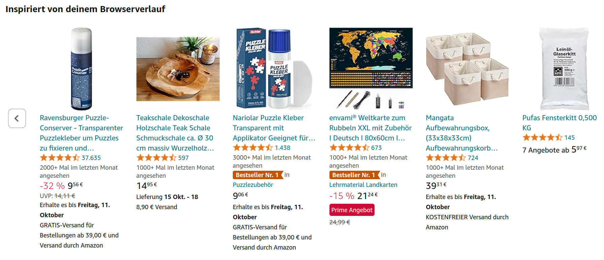
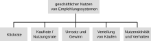
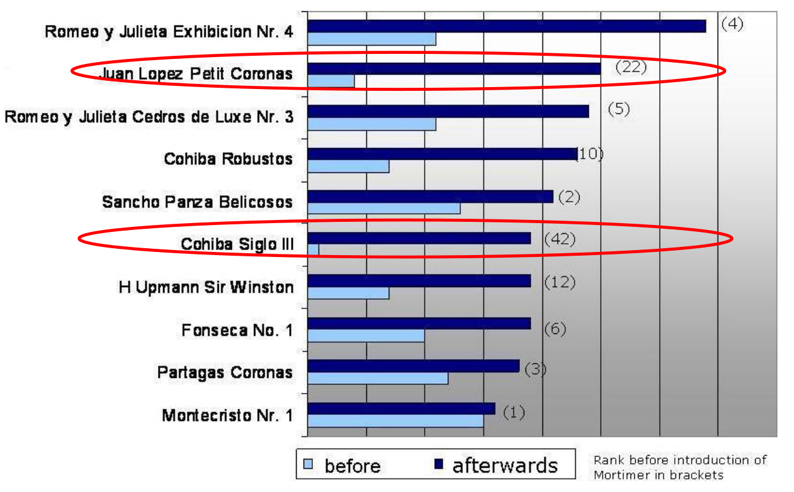
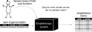
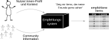
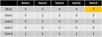
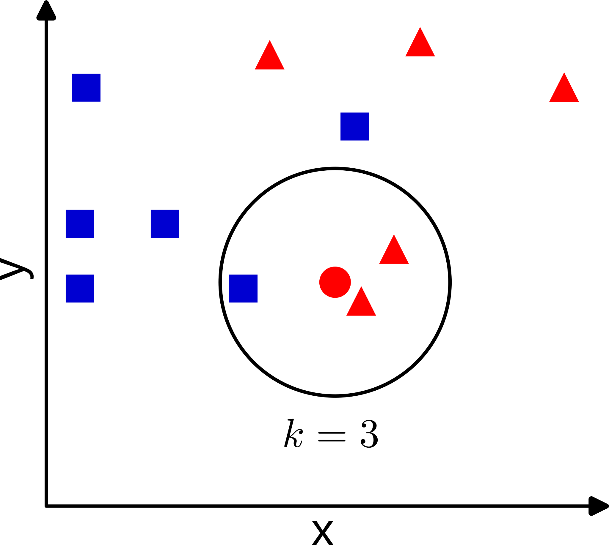
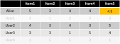
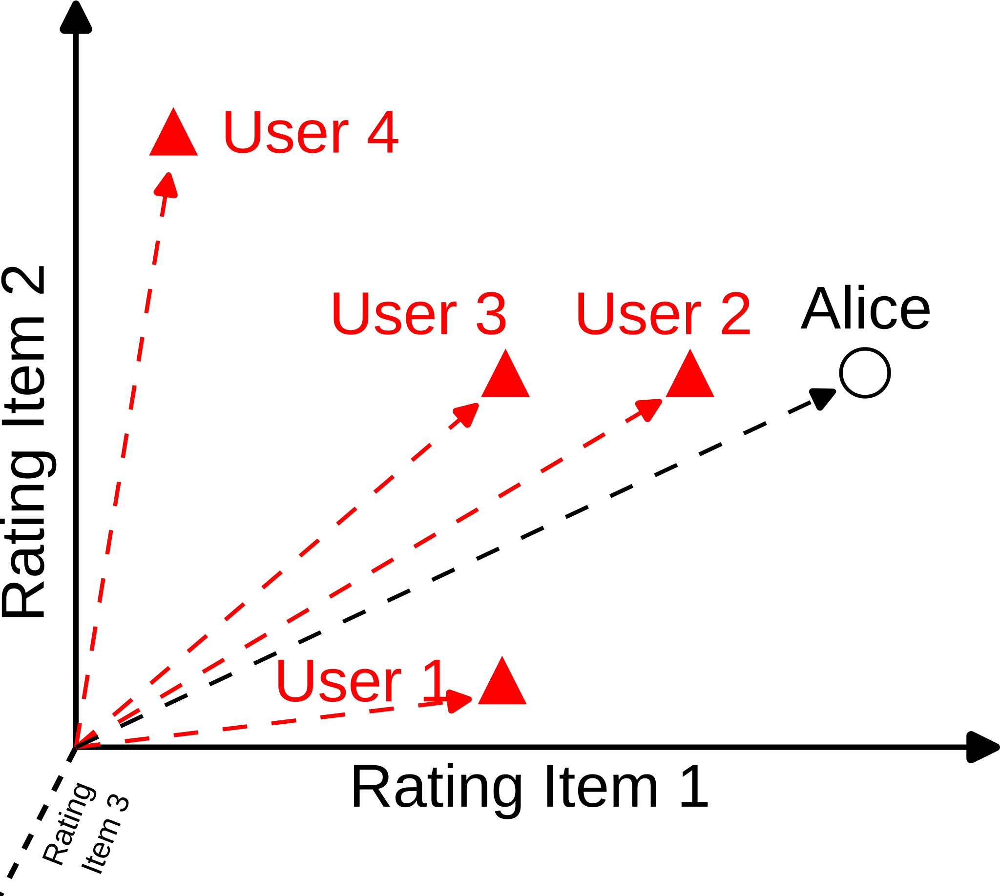

Vorlesung 4: Einführung Empfehlungssysteme


Empfehlungssysteme (Recommender Systems)
- Empfehlungssysteme begegnen uns praktisch überall in Internet.
- Sie stellen eine der am weitesten verbreiteten Anwendungen von maschinellem Lernen dar.

Empfehlungen auf der Shoppingwebsite Amazon basierend auf einem Browserverlauf.
Diese und die folgenden Folien sind inspiriert von Dietmar Jannachs Vorlesung "Recommender Systems: Value, Methods, Measurements".
Anwendungen von Empfehlungssystemen
Warum brauchen wir Empfehlungssysteme?
Informationsüberflutung
- Wir befinden uns in einer Informationsgesellschaft. In vielen Lebensbereichen steht mehr Information zur Verfügung als wir aufnehmen können.
- Beispiel Spotify
- Anfang 2024 gab es auf der Plattform 100 mio Songs.
- Angenommen jeder Song ist 3 min lang. Dann würde es etwa 5 mio Stunden dauern, alle Songs zu hören .
- Ein typisches Menschenleben hat etwa 30.000 Stunden. Selbst wenn wir die ganze Zeit Musik hören, würden wir nur 0.6% der verfügbaren Musik hören.
- Aus der Masse an verfügbaren Möglichkeiten muss ein kleiner Teil ausgewählt werden → Empfehlungssysteme.

Empfehlungen auf Spotify.
Verschiedene Interessen
Verschiedene Gruppen haben verschiedene Interessen an Empfehlungssystemen.
Konsument:innen
- Items finden die (langfristige) Bedürfnisse befriedigen.
- Gute Entscheidungen treffen.
- Neue Items entdecken.
- Über relevante Items informiert werden.
Hersteller:innen / Künstler:innen
- Gefunden werden.
- Kaufentscheidungen beeinflussen
- Informationen über die Kund:innen erhalten.
- Geld verdienen.
Plattformen
- Aktivität der Nutzer:innen steigern.
- Einen Service mit Mehrwert bieten
- Daten über Nutzer:innen sammeln.
- Geld verdienen.
Wie können wir messen, wie gut Empfehlungsssysteme funktionieren?
Was messen wir?
- Grundannahme: die Interessen der Konsument:innen und Hersteller:innen sowie Plattformen sind kompatibel.
- Der Markt regelt die effiziente Verteilung von Aufmerksamkeit auf Items.

Adaptiert von Jannach & Jugovac Measuring the Business Value of Recommender Systems, ACM TIMS (2019).
Klickrate, Kaufrate, Nutzungsrate
- Klickrate
- Misst, wie viele Klicks von Empfehlungen erzeugt werden: Anzahl Klicks / Anzahl Impressionen.
- Beispiel: Nachrichtenempfehlungen: wie viele Artikel klickt der/die Nutzer:in an?
- Kaufrate / Nutzungsrate
- Die Klickrate misst nicht, ob der/die Nutzer:in das empfohlene Item tatsächlich gelesen/gekauft/genutzt hat.
- Beispiel: wie viele Nutzer:innen sehen sich ein empfohlenes Video auf Netflix tatsächlich an, nachdem sie darauf geklickt haben?
Umsatz, Gewinn und Verteilung
- Klickrate, Kaufrate und Nutzungsrate sind gute Indikatoren dafür, dass die Empfehlungen für die Nutzer:innen relevant sind.
- Es kann allerdings sein, dass sich das nicht direkt für das Geschäft relevant ist, z.B. wenn Nutzer:innen einen Gegenstand ohnehin gekauft hätten.
- Die Veränderung von Umsatz und Gewinn duch den Einsatz des Empfehlungssystem kann ein besserer Indikator sein.
- Auch die Verteilung von Käufen / Nutzerverhalten kann ein wichtiger Indikator sein.

Käufe von verschiedenen Zigarettensorten vor/nach der Einführung eines personalisierten Empfehlungssystems. Quelle: Dietmar Jannach, Recommender Systems: Value, Methods, Measurements.
Nutzerverhalten und Aktivität
- Annahme: Höhere Nutzer:innenaktivität führt dazu, dass Nutzer dem Angebot länger erhalten bleiben (z.B. ihr Spotify Abo nicht kündigen).
- Bei werbefinanzierten Services: bleiben Nutzer:innen länger aktiv, sehen sie mehr Werbung.
- Bei Intensität und Dauer der Aktivität können Nutzer:innen und Anbietern/Plattformen unterschiedliche Interessen haben. Beispiel: Dating-Plattform.

Quelle: Printpeppermint.com.
Aufmerksamkeitsökonomie
- In der Aufmerksamkeitsökonomie wird die Aufmerksamkeit der Nutzer:innen zu ökonimischem Kapital.
- Empfehlungssysteme die kurzfirstige Bedürfnisse der Nutzer:innen wie Unterhaltung oder Zeitvertreib befriedigen können ihre langfristigen Interessen schädigen.
- Beispiele: Suchtverhalten, psychische Gesundheit, Polarisierung, Misinformation.

Quelle: Skyword.com.
Wie bauen wir Empfehlungssysteme?
Grundprinzip: personalisierte Empfehlung
Einzelne Empfehlung, keine weitere Interaktion, keine Anpassung an Verhalten.
Inhaltsbasierte Empfehlung

- Automatisierte Konstruktion eines Nutzer:innenprofils basierend auf den Eigenschaften der Items mit denen der/die Nutzer:in interagiert hat.
- Empfehlung: Machting von Nutzer:innenprofil und Itemprofil.
Kollaboratives Filtern

- Nutzung der Meinung oder des Verhaltens anderer Nutzer:innen zur Empfehlung.
- Annahme: Nutzer:innen die in der Vergangenheit die selben Vorlieben hatten, haben diese auch in der Zukunft.
Kollaboratives Filtern: Idee
Wir formulieren das Problem als "Komplettieren einer Tabelle":
- Wir haben Informationen darüber, wie gut unsere Nutzer:innen verschiedene Items finden (Ratings von 1 bis 5).
- Für Nutzerin Alice fehlt uns ein Rating für Item 5.
- Idee: wir nutzen die Ratings von anderen Nutzer:innen die Alice ähnlich sind, um das Rating von Alice für Item 5 vorherzusagen → überwachtes Lernen.

Kollaboratives Filtern: Vorgehen
- Finde Nutzer:innen die Alice ähnlich sind, also die die gleichen Items wie sie ähnlich gut fanden.
- Nutze das mittlere Rating dieser Nutzer:innen für das fehlende Item um vorherzusagen, ob Alice es auch mögen wird.
- Folge diesem Vorgehen für alle Items die Alice noch nicht gesehen hat und empfehle ihr das Item mit dem besten vorhergesagten Rating.
Wie gut funktioniert der Algorithmus?
→ Entferne einige von Alice's bekannten Ratings und sage sie mit dieser Methode voraus. Errechne den Vorhersagefehler mit der Wurzel aus der Fehlerquadratsumme.
K nächste Nachbarn Algorithmus
Erinnerung: Um eine neue Beobachtung zu klassifizieren
- Suche die k nächsten Datenpunkte ("k nächste Nachbarn").
- Wähle die Klasse, die die Mehrheit der nächsten Nachbarn hat (Mehrheitsvotum).
- Optional: gewichte mit der Distanz der Datenpunkte: Nachbarn die näher sind haben mehr Einfluss.

K nächste Nachbarn Algorithmus
- Nutzer:innen werden durch ihre Ratings für Items characterisiert.
- Verwende z.B. die Kosinus-Ähnlichkeit um Ähnlichkeit zwischen Nutzer:innen zu messen.
- Suche die k Nutzer:innen die Alice am ähnlichsten sind.
- Verwende die Ratings dieser Nutzer:innen, um Ratings für Items die Alice noch nicht gesehen hat vorherzusagen.





Zusammenfassung
- Empfehlungssysteme (Recommender Systems) finden sich praktisch überall im Internet wo wir mit Informationsüberflutung konfrontiert sind.
- Konsument:innen, Anbieter:innen und Plattformen können verschiedene Interessen haben. Werden Empfehlungssysteme z.B. den langfristigen Interessen von Konsument:innen nicht gerecht, kann das problematisch sein.
- Wie gut ein Empfehlungssystem funktioniert, kann z.B. mit der Klickrate bzw. Kaufrate gemessen werden, aber auch durch Nutzer:innenaktivität.
- Empfehlungssysteme können Informationen von Nutzer:innen, Eigenschaften von Items und Informationen aus der Nutzer:innen Community für Empfehlungen nutzen. Beispiel: kollaboratives Filtern.